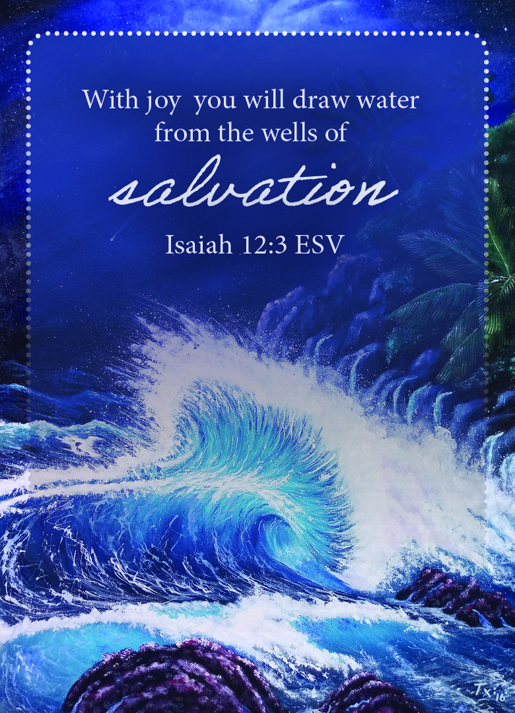

Isaiah 12:3 ESV
,

Pray the Scripture
Father God, I thank You for the gift of salvation from giving me Your only Son, who chose to die on the cross and
to rise on the third day so I can be saved & live with You for eternity. Thank You Lord God that I can live this
life with joy from Your heart, resting in Your perfect peace. Remind me no matter what the circumstance, I was
given salvation and I can take the thorn in my flesh and count it as joy. Remind me there is no testimony with out
a test. Remind me people are looking from the outside in. Help me to be joyful in the worst times, counting my
salvation as the ultimate joy, and standing on the rock of Your promises. Knowing You will never give me more than
I can take. Help me to love You more every day. In Jesus Name Amen.
In The Name of Jesus Amen
Next Card
Back To Prayer Card List